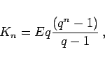
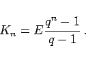

Es sollen Einzahlungen der gleichen Höhe E in gleichen Abständen geleistet werden. Diese Abschnitte sollen mit der Zinsperiode übereinstimmen. Wird die Einzahlung jeweils zu Beginn bzw. am Ende einer Zinsperiode geleistet, dann spricht man von einer vorschüssigen (praenumerando) bzw. einer nachschüssigen (postnumerando) Einzahlung. Am Ende der n-ten Zinsperiode erhält man den Kontostand Kn, und zwar:
|  | (1.81a) |
|  | (1.81b) |